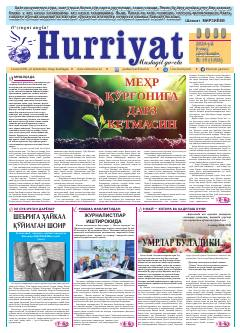

HIjtimoiy-ma'naviy mavzulardagi maqolalar va hayotiy hikoyalar jamlangan gazeta soni.
Ushbu nashr ijtimoiy-siyosiy va adabiy yo'nalishdagi "Hurriyat" gazetasining 2024-yilgi sonlaridan biri bo'lib, unda insoniylik, mehr-oqibat, qarindoshlar o'rtasidagi munosabatlar va turli hayotiy voqealar haqida mulohazalar yuritiladi. Maqolalarda jamiyatdagi dolzarb masalalar, qadriyatlar va oilaviy rishtalar e'tibor markaziga olingan.